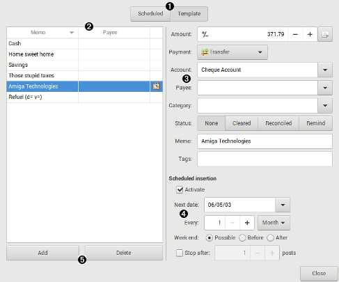

Using Scheduled/Template transactions dialog

 Template list
Template list
display the actual list of Scheduled/Template transactions in the wallet. It is always sorted in alphabetic order.
 Buttons
Buttons
| Remove | remove the active template. |
|---|---|
| Add | add a new empty template. |
 Transaction details
Transaction details
Please refer to transaction dialog for these fields.
 Scheduled insertion
Scheduled insertion
| Activate | set this template to be scheduled |
|---|---|
| Limit to | limit the insertion to a finished count |
| times | number of insertion to limit to |
| Every | set the insertion interval |
| Units | set the unit of the insertion interval: day, week, month, year |
| Next on | specify the date of the next insertion, when you first edit you should set it manually, then it is updated automatically. You can of course adjust it later if needed. |